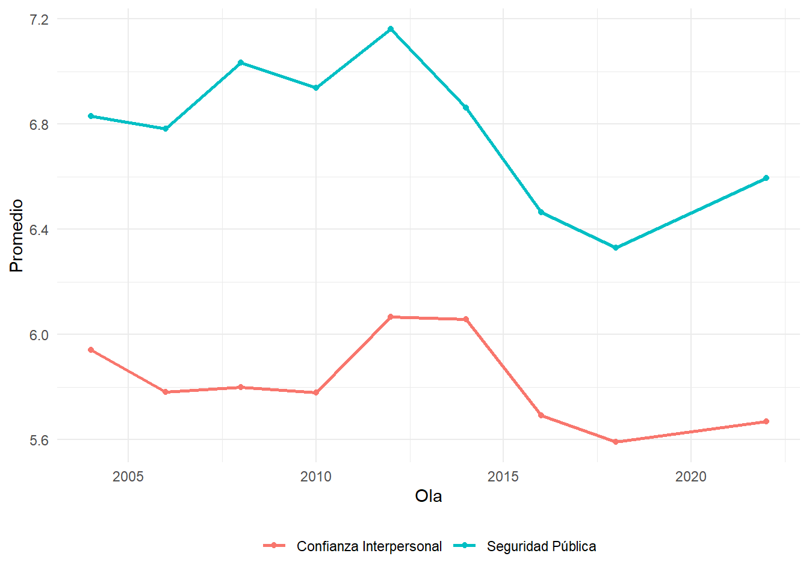
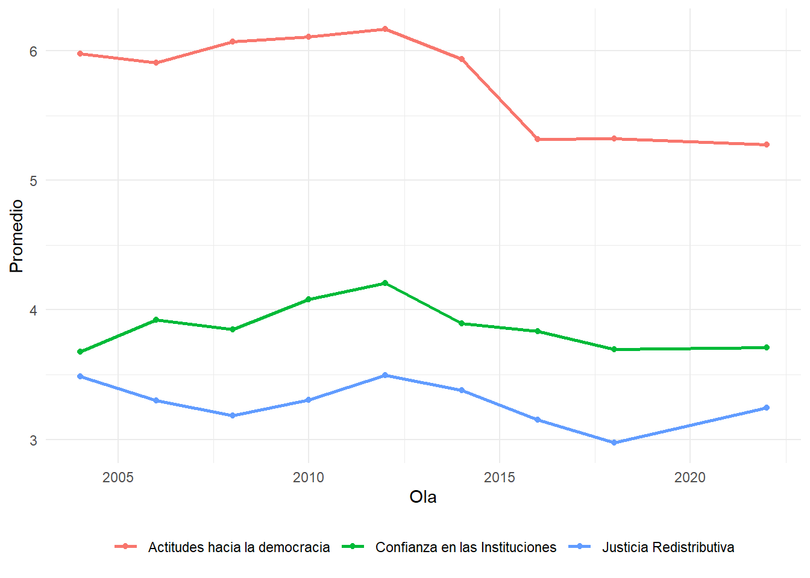

![]()
| País | Frecuencia |
|---|---|
| Bolivia | 18453 |
| Ecuador | 16775 |
| Panama | 12100 |
| Mexico | 11716 |
| Canada | 11700 |
| Peru | 11490 |
| Honduras | 11411 |
| Nicaragua | 10863 |
| Chile | 10862 |
| Uruguay | 9778 |
| Jamaica | 9136 |
| Dominican Republic | 8938 |
| United States | 8769 |
| Argentina | 8642 |
| Brazil | 8405 |
| Haiti | 8106 |
| Paraguay | 8052 |
| El Salvador | 7805 |
| Costa Rica | 7664 |
| Colombia | 7556 |
| Venezuela | 7404 |
| Guatemala | 7276 |
| Guyana | 6294 |
| Belize | 5753 |
| Trinidad & Tobago | 3309 |
| Total | 238257 |
Dos décadas de cambios en la cohesión social en América Latina (2004-2023)
Resumen
En un contexto regional marcado por crisis políticas, desigualdades persistentes y episodios de conflictividad social, comprender la evolución de la cohesión social es fundamental para evaluar la estabilidad democrática y la legitimidad institucional. Si bien existen numerosos estudios sobre las causas y consecuencias de la desconfianza o la polarización en América Latina, aún persiste un vacío en el análisis sistemático y longitudinal de la cohesión social como fenómeno integral. Este proyecto busca llenar ese vacío mediante el desarrollo de un conjunto de indicadores que permitan analizar con comparabilidad temporal y regional la evolución de las distintas dimensiones de la cohesión social.
Este artículo busca cubrir esas brechas proponiendo y validando un modelo de medición que permita un análisis comparativo, longitudinal y multinivel de la cohesión social en América Latina. En concreto, buscamos avanzar en: (i) una operacionalización clara y validada que integre dimensiones claves a partir de la literatura existente y los datos disponibles para la región; (ii) la estimación de trayectorias regionales y nacionales durante las últimas dos décadas; y (iii) la identificación de factores asociados a estos cambios mediante la aplicación de modelos de regresión multinivel híbridos. Con esto, se espera aportar evidencia robusta sobre los cambios en la región en las últimas dos décadas, aportando a la discusión académica y política sobre los desafíos y oportunidades de la cohesión social en América Latina.
Palabras clave
cohesión social, análisis multinivel, análisis longitudinal
Introduction
Social cohesion has emerged as a critical dimension of societal well-being and democratic stability, particularly in regions experiencing rapid social and political transformation. In Latin America, recent years have been marked by episodes of political instability, persistent inequalities and low economic growth, as well as cycles of social conflict (Salazar-Xirinachs, 2023; United Nations Development Programme, 2023). Social tensions therefore appear to have increased in the region, reflecting a lack of trust in democratic institutions and widespread discontent with corruption and inequality. In this context, social cohesion has climbed the public and academic agendas, with recent diagnoses from both international organizations and national governments warning about its strains and the challenges it poses for democratic governance and inclusive development (Castillo et al., 2022; Ministerio de Desarrollo Social y Familia, 2020; Salazar-Xirinachs, 2023; United Nations Development Programme, 2023).
Despite its widespread and everyday use in public discussion, defining social cohesion theoretically and operationally remains a challenge. The literature ranges from studies focused on one or several specific dimensions of social cohesion (Ariely, 2013; Castillo et al., 2022; Castillo et al., 2023) to efforts to synthesize the phenomenon into comprehensive indices (Delhey et al., 2018; Delhey & Dragolov, 2016; Dragolov et al., 2013; Janmaat, 2010; Langer et al., 2016). Such conceptual and methodological heterogeneity makes it difficult to compare countries and to detect transformations over time. Moreover, most of these definitions and their correspondent operationalizations have been tested mainly in European or high-income countries (Ariely, 2013; Delhey & Dragolov, 2016), with only partial references to Latin America (Janmaat, 2010). This limitation persists even though evidence suggests that national and regional differences in cultural, historical, and institutional contexts shape the cohesion of societies and the factors that determine it (Delhey & Dragolov, 2016; Janmaat, 2010). Thus, despite the widespread perception that social cohesion is under strain in Latin American societies,there is a lack of empirical evidence of differences between countries, trends over time, and the factors that explain these changes.
This article has a double aim. On the one hand, and based on previous comprehensive approaches to social cohesion, it seeks to propose and validate a measurement model that enables comparative, longitudinal, and multilevel analysis of social cohesion in Latin America. On the second hand, based on this model, we aim to advance on the estimation of regional and national trajectories over the past two decades, as well as to identufy factors associated with these changes through longitudinal multilevel regression models. This is expected to provide robust evidence on the changes in the region over the last two decades, contributing to the academic and policy discussion on the challenges and opportunities of social cohesion in Latin America.
Metodología
Datos
La principal fuente de datos para este estudio es la AmericasBarometer del Latin American Public Opinion Project (LAPOP Lab), también conocida como Encuesta LAPOP. La encuesta tiene por objetivo recolectar datos la opinión pública sobre democracia y gobernanza en el continente americano. El diseño de la encuesta es probalístico y representativo de la población adulta de cada país (LAPOP LAb, 2023).
La encuesta se ha aplicado de manera regular desde el año 2004. A la fecha, se han realizado 9 olas que han incluido entre 11 a 23 países, sumando un total sobre 400.000 entrevistas en dos décadas. El cuestionario se administra a través de encuestas cara a cara, con la excepción de Canadá y Estados Unidos.
Como criterio, en este estudio se incluyeron únicamente los países de la región que contaban con datos disponibles para los indicadores principales del estudio en, al menos, 5 puntos en el tiempo. Como se resume en Tabla 1, se incluyen en este estudio un total de 238.257 individuos anidados en 174 olas-países en 25 países del continente americano.
Para datos contexuales de los países, se recurrió a diversas fuentes de datos que incluyen:
Los datos abiertos del Banco Mundial. Contiene diversos indicadores sobre desarrollo social y económico de la mayoría de los países del mundo. El portal de datos es accesible en: https://datos.bancomundial.org/.
The Worlwide Governance Indicators del Banco Mundial. Se trata de una encuesta a expertos que recopila datos sobre diversos indicadores de gobernanza, cubriendo múltiples países con información actualizada entre 1996 y 2003. Los datos se encuentran disponibles en: https://www.worldbank.org/en/publication/worldwide-governance-indicators.
The V-Dem Dataset. Recoge un conjunto multidimensional de datos que busca medir la calidad de la democracia alrededor del mundo. La base de datos es accesible mediante el paquete de R
vdemdata(Maerz et al., 2025)
Variables
Variables Dependientes
Se construyó un índice de Cohesión Social que se compone de dos dimensiones que, a su vez, son índices sumativos construidos a partir de indicadores de LAPOP. La selección de indicadores, subdimensiones y dimensiones está basado en el trabajo previo a nivel agregado del Observatorio de Cohesión Social, accesible aquí: https://ocscoes.github.io/medicion-cohesion-LA/.
El Índice de Cohesión Horizontal se compone de dos subdimensiones, Seguridad Urbana y Confianza Interpersonal. Seguridad urbana integra indicadores de seguridad objetiva y seguridad subjetiva. Confianza Interpersonal, en tanto, es un único indicador sobre que tan confiable son las personas en general¹.
El Índice de Cohesión Vertical se compone de dos dimensiones: Confianza en instituciones, Actitudes hacia la democracia. Confianza en las instituciones integra indicadores relativos a la confianza de los ciudadananos en el congreso, en el poder judicial y en los partidos políticos. Actitudes hacia la democracia se compone de dos indicadores sobre apoyo al sistema democrático y la satisfacción con el funcionamiento de la democracia en su país².
Los indicadores fueron estandarizados de modo que todas las subdimensiones y dimensiones de los índices tienen un rango de 0 a 10, con 0 indicando bajos niveles de cohesión social y 10 indicando altos niveles de cohesión.
Variables Independientes
Se incluyeron como variables independientes factores económicos, institucionales y culturales. Reconociendo la estructura jerárquica de los datos, se consideraron predictores a nivel individual, a nivel de olas-país, y a nivel país.
Variables Individuales
El principal predictor individual utilizado en este estudio es el nivel educativo de las personas. Las múltiples codificaciones de LAPOP para este indicador fueron únificadas para crear una variable de 3 categorías, distinguiendo individuos con educación primaria, secundaria y terciaria.
Además, se añadieron como variables de control el sexo, la edad y la posición política de los individuos.
Variables Contextuales
Prosperidad económica se midió a través del logaritmo del PIB per cápita a valores de paridad de poder adquisitivo (PPA). Desigualdad económica en tanto se midió a partir del Índice Gini. Ambos indicadores se extrajeron del banco de datos del Banco Mundial. Además, se incluyó el porcentaje de individuos con educación terciaria en un país como proxy de oportunidades educativas.
En cuanto a factores institucionales, se consideró el Índice de Democracia Electoral, o poliarquía, para medir la Calidad democrática de los países. Por otro lado, se incluyó un índice de gobernanza (\(\alpha\) = 0.96) calculado a partir de los Worldwide Governace Indicators del Banco Mundial (Kaufmann & Kraay, 2024).
Se medirá diversidad cultural como el porcentaje de población migrante sobre la población total del país, usando datos del Banco Mundial. Dado que la serie está disponible cada cinco año, se construyó una serie anual imputando los años intermedios mediante una interpolación logística.
Método
Análisis Factorial Confirmatorio
Se realizó un análisis factorial confirmatorio con el fin de poner a prueba el modelo construido por el Observatorio de Cohesión Social (2025) y la propuesta teórica de Chan et al. (2006). Como se observa en la Figura 1, se entiende la Cohesión Social como un constructo latente constituido de dos dimensiones latentes – Cohesión Vertical y Cohesión Horizontal.

Análisis Multinivel
Dada la estructura jerárquica de los datos, se estimaron modelos de regresión multinivel híbridos. Esta técnica permite utilizar datos a nivel individual para descomponer los efectos a nivel país en sus componentes entre países (efectos between) y dentro de un país en el tiempo (efectos within) (Fairbrother, 2014; Schmidt-Catran & Fairbrother, 2016). Los modelos fueron estimados usando el paquete de R lme4 (Bates et al., 2015).
El modelo propuesto se podría expresar formalmente como:
\[ y_{jti} = \beta_{0}(t) + \beta_{1}X_{jti} + \gamma_{we}(Z_{jt}-\bar{Z}_{j}) + \gamma_{be}\bar{Z}_{j} + v_j + u_{jt} + e_{jti} \] El modelo integra 3 niveles con individuos \(i\) anidados en olas-países \(t\) anidados países \(j\). \(X_{jti}\) representa variables de nivel individual mientras que \(Z_{jt}\) son variables contextuales a nivel ola-país. Dado que \(Z_{jt}\) contiene varianza tanto de nivel 2 como de nivel 3, se descompuso en el promedio de la variable a lo largo de todas sus olas (\(\bar{Z}_{j}\)) y en la desviación intra-país en una ola dada (\(Z_{jt}-\bar{Z}_{j}\)). De tal forma, \(\gamma_{we}\) representa en el efecto within, es decir, el efecto del cambio en un país en el tiempo; mientras que \(\gamma_{be}\) representa el efecto between, es decir, las diferencias estructurales entre países. Además, \(\beta_{0}(t)\) controla cambios en el tiempos no explicados por el modelo. Por último, \(v_j\), \(u_{jt}\) y \(e_{jti}\) representan los errores a nivel país, ola-país e individual.
Resultados
Análisis Factorial Confirmatorio

Nota. RMSEA = 0.022, CFI = 0.998, Chi-cuadrado = 111.6, gl = 1, p-valor = 0.
En Figura 2 se presentan los resultados del análisis factorial confirmatorio hecho a partir del modelo de medición propuesto. En primer lugar, se observa que los indicadores presentan cargas factoriales moderadas, las cuales van del 0.45 al 0.6 dependiendo del caso, lo que sugiere que los indicadores reflejan parcialmente las dimensiones latentes. Los índices de ajuste son de buena calidad, apuntando a una fiabilidad del constructo. Ahora, dado que el modelo cuenta con un solo grado de libertad, las medidas de ajuste global deben interpretarse con precaución. En suma, el modelo ofrece un ajuste aceptable a nivel identificacional, pero la validez de los factores son limitadas, lo que podría solucionarse aumentando el número o la calidad de los indicadores en futuras mediciones.
Descriptivos
A continuación se presentan los resultados descriptivos sobre los cambios de la cohesión social en América Latina en las últimas dos décadas.

En Figura 3 se visualizan los promedios de cada año para los distintos tipos de cohesión. En primer lugar, se puede observar que la cohesión horizontal mantiene un patrón ascendente entre 2004 y 2012, exceptuando la caída del año 2010. Posterior a esto, la cohesión horizontal se enfrenta a una decaída sostenida hasta el 2018, para luego volver a repuntar e incluso superando su nivel registrado en 2004. La cohesión vertical presenta un patrón de variación parecido al de la cohesión horizontal, evidenciando un alza persistente en el tiempo hasta el año 2012, donde luego sufre una caída abrupta a nivel regional. Este descenso se mantuvo hasta el 2016, donde luego se revertiría esta dinámica, notándose un aumento de la cohesión vertical hasta el último año registrado. Si bien, la última medición de la cohesión vertical muestra niveles superiores al del inicio, sus puntuaciones en general son considerablemente bajas al compararlas con la cohesión horizontal, diferenciándose en todas las olas por aproximadamente 1.5 puntos. En suma, en América Latina se denota una mayor cohesión horizontal por sobre la vertical de manera consistente desde el 2004 hasta el 2022[³].
[³]: Cabe mencionar que la cohesión social (recta verde) es el promedio de la cohesión vertical y horizontal, por ello no se detalla su interpretación.

En Figura 4 se presentan los promedios por año de las subdimensiones horizontales, seguridad pública y confianza interpersonal. En la seguridad pública se observa un patrón inestable entre los años 2004 y 2012, marcado por descensos y ascensos alternados. Posterior a 2012 se evidencia un fuerte deterioro en la subdimensión hasta 2018, viéndose un repunte después de este año, sin embargo, la recuperación no logra llegar a los niveles de seguridad que existían en un principio. La confianza interpersonal, por su parte, presenta un aumento hasta el 2010, año en el que sufre una leve caída, pero el año siguiente volviendo a ascender. Post 2012 se observa un patrón similar al de seguridad pública, con un descenso sostenido hasta el año 2018 para luego recuperarse. Una de las principales diferencias entre las dos subdimensiones es que, mientras en 2022 seguridad pública registró un promedio inferior al de la primera ola, los niveles de confianza interpersonal en 2022 fueron mayores que los de 2004.

En Figura 5 están graficados los cambios en el tiempo de las dos subdimensiones de cohesión vertical. Actitud hacia la democracia presenta un alza sostenida hasta el 2008, donde luego sufre una caída paulatina, destacándose un descenso abrupto entre 2014 y 2016. Posterior a esto, las afecciones hacia la democracia evidencian nuevamente un ascenso en sus niveles regionales, sin embargo, no logra alcanzar sus niveles iniciales. En confianza en instituciones se observan niveles ascendentes desde 2004 hasta 2012, a excepción de la baja del 2008. Los años siguientes se evidencia un decrecimiento en la confianza institucional hasta el 2016, para luego demostrar un repunte hasta el último año registrado, llegando a superar los niveles de confianza en instituciones del 2004.
Relationship between and within country level factors with social cohesión

Referencias
ANDREWS, R., & JILKE, S. (2015). Welfare States and Social Cohesion in Europe: Does Social Service Quality Matter? Journal of Social Policy, 45(1), 119-140. https://doi.org/10.1017/s0047279415000513
Araujo, K., Orchard, M., Rasse, A., & Stecher, A. (2022). Primer Informe de Resultados Encuesta Nacional de Autoridad NUMAAP 2021. NUMAAP.
Ariely, G. (2013). Does Diversity Erode Social Cohesion? Conceptual and Methodological Issues. Political Studies, 62(3), 573-595. https://doi.org/10.1111/1467-9248.12068
Bates, D., Mächler, M., Bolker, B., & Walker, S. (2015). Fitting Linear Mixed-Effects Models Using Lme4. Journal of Statistical Software, 67(1). https://doi.org/10.18637/jss.v067.i01
Cabib, I., Miranda, D., Ormeño, J. P., & Moyano, D. (2025). Nuestras Trayectorias. Dinámicas intra-individuales e inter-individuales en Chile (2016-2023). https://doi.org/10.13140/RG.2.2.23888.62720
Castillo, J. C., Espinoza, V., & Barozet, E. (2022). Cohesión social en Chile en tiempos de cambio: indicadores, perfiles y factores asociados.
Castillo, J.-C., Olivos, F., & Iturra, J. (2021). Conceptos y Medición de Cohesión Social En Proyectos Internacionales (Documentos de Trabajo COES 47; pp. 1-37). COES.
Chan, J., To, H.-P., & Chan, E. (2006). Reconsidering Social Cohesion: Developing a Definition and Analytical Framework for Empirical Research. Social Indicators Research, 75(2), 273-302. https://doi.org/10.1007/s11205-005-2118-1
Delhey, J., & Dragolov, G. (2016). Happier Together. Social Cohesion and Subjective Well-Being in Europe: HAPPIER TOGETHER-COHESION AND SWB. International Journal of Psychology, 51(3), 163-176. https://doi.org/10.1002/ijop.12149
Fairbrother, M. (2014). Two Multilevel Modeling Techniques for Analyzing Comparative Longitudinal Survey Datasets. Political Science Research and Methods, 2(1), 119-140. https://doi.org/10.1017/psrm.2013.24
Gijsberts, M., van der Meer, T., & Dagevos, J. (2011). «Hunkering Down» in Multi-Ethnic Neighbourhoods? The Effects of Ethnic Diversity on Dimensions of Social Cohesion. European Sociological Review, 28(4), 527-537. https://doi.org/10.1093/esr/jcr022
Kaufmann, D., & Kraay, A. (2024). The Worldwide Governance Indicators (Policy Research Working Paper WPS10952). World Bank.
Kustov, A., & Pardelli, G. (2024). Beyond Diversity: The Role of State Capacity in Fostering Social Cohesion in Brazil. World Development, 180, 106625. https://doi.org/10.1016/j.worlddev.2024.106625
Langer, A., Stewart, F., Smedts, K., & Demarest, L. (2016). Conceptualising and Measuring Social Cohesion in Africa: Towards a Perceptions-Based Index. Social Indicators Research, 131(1), 321-343. https://doi.org/10.1007/s11205-016-1250-4
LAPOP LAb. (2023). AmericasBarometer.
Lê, F., Tracy, M., Norris, F. H., & Galea, S. (2013). Displacement, County Social Cohesion, and Depression after a Large-Scale Traumatic Event. Social Psychiatry and Psychiatric Epidemiology. https://doi.org/10.1007/s00127-013-0698-7
Maerz, S. F., Esgell, A. B., Hellemeier, S., Illchenko, N., & Fox, L. (2025). Vdemdata: An R Package to Load, Explore and Work with the Most Recent V-Dem (Varieties of Democracy) Dataset.
Meer, T. van der, & Tolsma, J. (2014). Ethnic Diversity and Its Effects on Social Cohesion. Annual Review of Sociology, 40(1), 459-478. https://doi.org/10.1146/annurev-soc-071913-043309
Ministerio de Desarrollo Social y Familia. (2020). Informe Final Consejo Asesor Para La Cohesión Social. Diagnóstico Para Una Aproximación a La Cohesión Social En Chile y Recomendaciones Para Fortalecer El Aporte de La Política Social.
Nazmi, A., Roux, A. D., Ranjit, N., Seeman, T. E., & Jenny, N. S. (2010). Cross-Sectional and Longitudinal Associations of Neighborhood Characteristics with Inflammatory Markers: Findings from the Multi-Ethnic Study of Atherosclerosis☆☆☆. Health & Place. https://doi.org/10.1016/j.healthplace.2010.07.001
Njozela, L., Shaw, I., & Burns, J. (2016). Towards Measuring Social Cohesion in South Africa.
O’Donnell, J., Guan, Q., & Prentice, T. (2024). Mapping Social Cohesion 2024 (Scanlon Foundation Research Institute).
Reeskens, T., & Wright, M. (2012). Nationalism and the Cohesive Society. Comparative Political Studies, 46(2), 153-181. https://doi.org/10.1177/0010414012453033
Salazar-Xirinachs, J. M. (2023). Repensar, reimaginar, transformar: los «qué» y los «cómo» para avanzar hacia un modelo de desarrollo más productivo, inclusivo y sostenible. Revista de la CEPAL, 2023(141), 11-43. https://doi.org/10.18356/16820908-2023-141-2
Schiefer, D., & van der Noll, J. (2017). The Essentials of Social Cohesion: A Literature Review. Social Indicators Research, 132(2), 579-603. https://doi.org/10.1007/s11205-016-1314-5
Schmidt-Catran, A. W., & Fairbrother, M. (2016). The Random Effects in Multilevel Models: Getting Them Wrong and Getting Them Right. European Sociological Review, 32(1), 23-38. https://doi.org/10.1093/esr/jcv090
Somma, N. M., & Valenzuela, E. (2015). Las Paradojas de La Cohesión Social En América Latina. Revista del CLAD Reforma y Democracia, 61, 43-74.
Stafford, M., Bartley, M., Sacker, A., Marmot, M., Wilkinson, R., Boreham, R., & Thomas, R. S. (2003). Measuring the Social Environment: Social Cohesion and Material Deprivation in English and Scottish Neighbourhoods. Environment and Planning a Economy and Space. https://doi.org/10.1068/a35257
Stefoni, C. (2018). Panorama de la migración internacional en América del Sur.
Toppi, H. P. (2018). Guillermo O’Donnell y Su Aporte al Desarrollo de La Democracia En América Latina Desde La Tercera Ola de Democratización. REVISTA IUS, 12(42). https://doi.org/10.35487/rius.v12i42.2018.407
Turchi, G. P., Bassi, D., Cavarzan, M., Camellini, T., Moro, C., & Orrù, L. (2023). Intervening on Global Emergencies: The Value of Human Interactions for People’s Health. Behavioral Sciences. https://doi.org/10.3390/bs13090735
United Nations Development Programme. (2023). Trapped: High Inequality and Low Growth in Latin America and the Caribbean: Regional Human Development Report 2021. United Nations. https://doi.org/10.18356/9789210057844